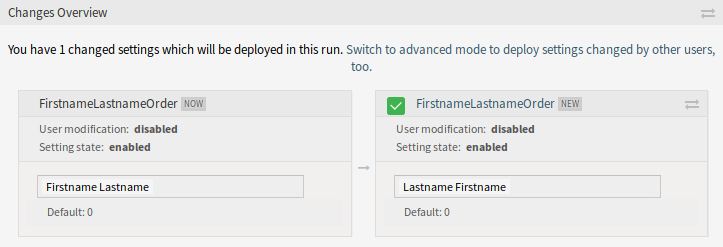

Rendszerbeállítások¶
A modern rendszereknek számos módja van a viselkedésük beállítására. Néhány rendszer parancssorban szerkesztett beállítófájlokat használ, néhány grafikus felületet biztosít (és az információkat beállítófájlokba menti a háttérben), míg mások adatbázist használnak. A változtatások karbantartása és az ellenőrzés néha problémát jelenthet, mivel nem mindig világos, hogy ki végezte el a változtatást. A tömeges változtatások nem mindig lehetségesek, és a változtatások visszaállítása rutinszerűvé válhat.
Az OTRS egy kényelmes grafikus felületet használ a rendszer beállításához. Az alapértelmezett rendszerbeállítások minden változtatása az adatbázisban tárolódik, és auditálható (ki változtatta meg a beállítást és mikor, mi volt a régi érték és mi az új érték), valamint helytelen beállítás esetén visszaállítható egy korábbi állapotra.
Kényelmes keresés teszi lehetővé a szükséges beállítások gyors és egyszerű megtalálását.
Lásd még
A System Configuration History csomag használatával egyszerűen visszaállíthatja a felhasználók által elvégzett változtatásokat. Vegye fel a kapcsolatot velünk a sales@otrs.com címen, hogy hozzáadhassa ezt a funkciót a rendszeréhez.
Használja ezt a képernyőt a rendszer konfigurációs beállításainak kezeléséhez. Az OTRS körülbelül 2200 beállítási lehetőséggel érkezik. A rendszerbeállítás kezelésének képernyője az Adminisztráció csoport Rendszerbeállítások moduljában érhető el.
Rendszerbeállítások kezelése¶
Megjegyzés
Biztonsági okokból az adatbázis-kapcsolat konfigurációs beállításait nem lehet megváltoztatni a rendszerbeállítások grafikus felhasználói felületén. Ezeket kézzel kell beállítani a Kernel/Config.pm fájlban.
Egy rendszerbeállítás módosításához számos lépést kell elvégeznie. A következő példa azt mutatja be, hogy hogyan kell megkeresni, módosítani, üzembe állítani és visszaállítani a FirstnameLastnameOrder rendszerbeállítást.
Keresse meg a rendszerbeállítást a
lastnamekeresési kifejezés beírásával a keresődobozba.A szabad-szavas kereséssel az összes konfigurációs beállítás kereshető egy vagy több kulcsszóval. A szabad-szavas keresés nem csak a konfigurációs beállítások neveiben keres, hanem a leírásokban és az értékekben is. Ez lehetővé teszi egy elem egyszerű megtalálását akkor is, ha a neve ismeretlen.

Rendszerbeállítás – beállítás keresése
Válassza ki a beállítást a keresési eredményekből.

Rendszerbeállítás – megtalált beállítás
Kattintson a felületi elem fejlécére a lehetőségek megtekintéséhez.

Rendszerbeállítás – kinyitott beállítás
Vigye az egeret a felületi elem törzse fölé a Beállítás szerkesztése gomb megtekintéséhez.

Rendszerbeállítás – rámutatva a beállításra
Kattintson a Beállítás szerkesztése gombra a szerkesztőmód aktiválásához. Szerkesztőmódban a felületi elem egy narancssárga szegélyt kap a bal oldalon.
Megjegyzés
Ha egy beállítást jelenleg egy másik adminisztrátor szerkeszt, akkor nem lehetséges hozzáférni a szerkesztőmódhoz annál a beállításnál, amíg a másik adminisztrátor be nem fejezi a munkáját.

Rendszerbeállítás – rákattintva a beállításra
Változtassa meg a beállítás értékét. A szerkesztés megszakítható a Mégse gombra kattintva a jobb oldalon vagy az Escape billentyű megnyomásával a billentyűzeten. Ha a szerkesztést megszakítják, akkor a jelenlegi szerkesztési munkamenet során elvégzett összes változtatás el lesz dobva.

Rendszerbeállítás – beállítás módosítva
Kattintson a Mentés gombra. Ha a módosítások mentésre kerültek, akkor a felületi elem egy zöld szegélyt kap a bal oldalon.

Rendszerbeállítás – beállítás elmentve
Menjen vissza, és kattintson a Üzembe állítás gombra a bal oldalsávban. Az értesítési sávban is értesítve lesz, hogy olyan beállításai vannak, melyek nincsenek üzembe állítva.

Rendszerbeállítás – beállítás megváltozott
Vizsgálja felül a változtatásokat.
Rákattinthat a ⇄ gombra a jobb felső sarokban a változtatások egymás mellett történő összehasonlításához.
Rendszerbeállítás – beállítási eltérések
- Kattintson a Kijelölt változások üzembe állítása gombra. Ha több beállítás is megváltozott, akkor lehetőség van csak a kijelölt beállítások üzembe állítására.
- Adjon meg egy üzembe állítási megjegyzést, amely elmagyarázza a többi adminisztrátornak, hogy mi változott és miért. Itt használjon teljes mondatot.

Rendszerbeállítás – beállítás üzembe állítása
- Menjen vissza, és keressen rá újra a
lastnamekifejezésre a módosított beállítás megkereséséhez. A felületi elem egy szürke szegélyt kapott a bal oldalon azt jelezve, hogy ezt a beállítást módosították.

Rendszerbeállítás – beállítás üzembe állítva
- A beállítás visszaállításához kattintson a felületi elem fejlécére a lehetőségek megtekintéséhez. Ezután kattintson a Beállítás visszaállítása gombra.

Rendszerbeállítás – beállítás visszaállítása
- Kattintson a Megerősítés gombra.
- Állítsa üzembe a beállításokat.
A navigációs fa használata¶
Minden egyes konfigurációs beállítás egy kategória és egy navigációs csoport szerint van osztályozva. A navigációs csoportok egyéni elemek a fő navigációs fában. Ezen navigációs bejegyzések egyikének kiválasztásával a kiválasztott csoporthoz rendelt összes beállítás láthatóvá válik. Amíg nincsenek kiegészítők telepítve, addig a kategóriaválasztó automatikusan el van rejtve, de amint egy olyan csomagot telepítenek, amely saját konfigurációs beállításokat hoz (mint például az ITSM modulok vagy a kérdőív), a kategóriaválasztó felfedésre kerül. Egy kategória választása csak azokat a navigációs csoportokat jelenítteti meg a fő navigációs fával, amelyek a kiválasztott kategóriához tartoznak.

Rendszerbeállítás navigációs fa
Egy elem kinyitásához kattintson a mellette lévő nyílra. A zárójelek között lévő szám azt mutatja, hogy hány beállítás tartozik az elemhez. Ha egy elemnek nincsen száma, akkor az az elem csak egy csomagoló kategória. Nincsenek beállításai, csak alkategóriái vannak.
A navigációs fa használata ugyanazt eredményezi, mintha egy beállításra keresne rá. Ha látni szeretné egy beállításnál, hogy mely csoporthoz tartozik, akkor nyissa ki a felületi elem fejlécére kattintva.
Rendszerbeállítás – kinyitott beállítás
Például a FirstnameLastnameOrder a Frontend → Base csoportban található.
Rendszerbeállítások importálása és exportálása¶
Kattintson az Importálás és exportálás gombra a bal oldalsávban az importálás és exportálás képernyőhöz való hozzáféréshez.

Rendszerbeállítások – importálás és exportálás
A rendszerbeállítások exportálásához:
- Kattintson a Jelenlegi beállítások exportálása gombra az Exportálás felületi elemben.
- Mentse el az
Export_Current_System_Configuration.ymlfájlt a helyi fájlrendszerre. - Nevezze át a fájlt a jobban érthető névre.
A rendszerbeállítások importálásához:
- Kattintson a Tallózás… gombra az Importálás felületi elemben.
- Válasszon egy előzőleg exportált
.ymlfájlt. - Kattintson a Rendszerbeállítás importálása gombra.